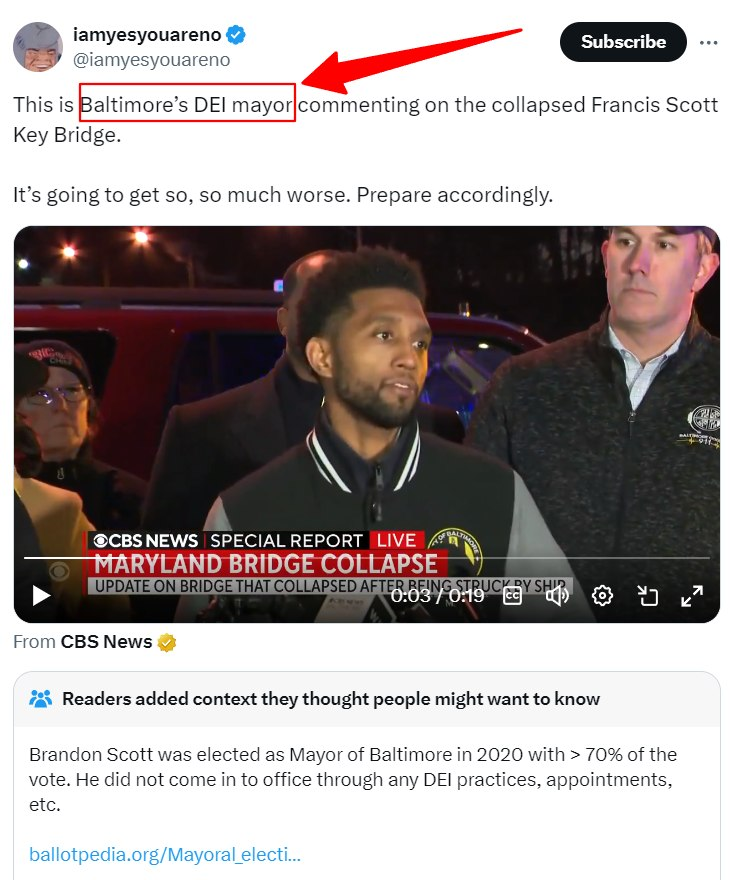

Timeline photos
BALTIMORE'S DEI MAYOR
There is this bizarre trend going on that blames the bridge collapse in Baltimore on DEI.
As a 53-year-old-business-owning-property-owning White man, I think I have a unique perspective on this topic.
I think what is being said here is on a spectrum. On the most extreme side, these people (primarily White men who are supported by some White women) hate other races. In their heart-of-hearts, they think Black people (and other non-White people) are not as capable as White people.
Black families are screwed up. Their communities are screwed up. They either aren't smart enough to graduate high school, or they just don't give a damn.
Young Black men are hoodlums that are rightfully thrown in prison as soon as possible because if they haven't broken the law yet, just give them time.
What I will say about this group of people is that who is in this group may very well surprise you. It's many people's fathers and grandfathers. They are mainlining Fox News and yelling the N-Word at the TV screen. (I've witnessed that happening in my family.)
These people are polished and politically correct when they walk out the door. But it's a whole different animal when you get them alone in the privacy of their own homes.
I think we'd be shocked at how many White men fall into this category if we actually knew the truth.
The next group of White men, which I think is smaller than the first group, just believes everyone should be equal. If Asians score the best on SATs and ACTs, then Asians should go to the best schools. If you can't measure up, then get out of the way.
Their mantra is, "Stop looking at race altogether. Whoever is the best should get the position."
I think this second group sometimes comes from the first group. People aren't statues of belief. Our biases ebb and flow based on how we feel on any given day.
I also believe that sometimes this is the public position of people in the first group. They actually really hate Black people and Brown people. But their public relations position is: Everyone should be equal.
And I think the second group occasionally sometimes dips into the first group. They probably are watching less Fox News. They are likely watching more independent media on YouTube, TikTok and Twitter. They are making efforts to be more rational about the entire thing. But they can't see how the world is set up unequally from the get-go. Life is hard for everyone, is their belief. But we all have an equal shot at moving up the ladder.
My father-in-law was repeatedly bullied by Black kids growing up. He lived in an all-Black area of East Cleveland. They constantly stole his lunch money. He tells a harrowing story of a kid jamming a pencil in his neck, demanding he give him his money.
My father-in-law's biases are a product of his environment and probably his parents (although I never met them, so I can't comment on any racism they may have had.)
White men are angry and scared. And they aren't irrational for being so.
The system takes away their jobs just like it takes away Black people's jobs. We gave car production to Mexico. We gave the rest of the manufacturing to China. We basically outlawed coal production. And now AI is coming for their trucking jobs.
White men are on the chopping block just like the rest of American society is on the chopping block. Your job will always be sold to the lowest bidder. And increasingly, if you are an office worker, it's probably going to be some person in India who will run AI for your company for $3/hour. You probably should get on board with Universal Basic Income because the job market isn't looking good for any of us these days.
My point of this post is to maybe help you understand where White men are coming from. They aren't right. Of course, minorities have a harder time than White men. Asians get into the best schools. But they rarely become the CEO of major companies. That's still usually a White man.
But White men have problems. Existential problems. They aren't wrong about being angry and scared. They are just directing their hatred to the wrong people. It's the Democrats and Republicans that are hurting White men (and everyone else), not Black men.
- Brandon Scott was elected as Mayor of Baltimore in 2020 with > 70% of the vote.